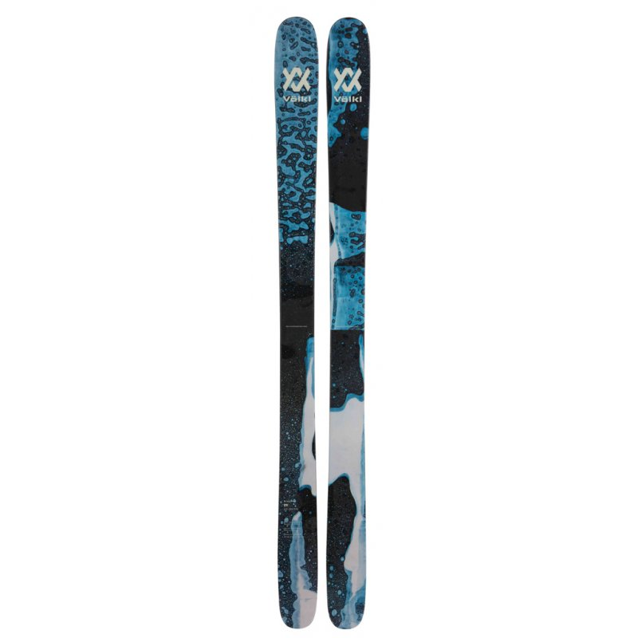
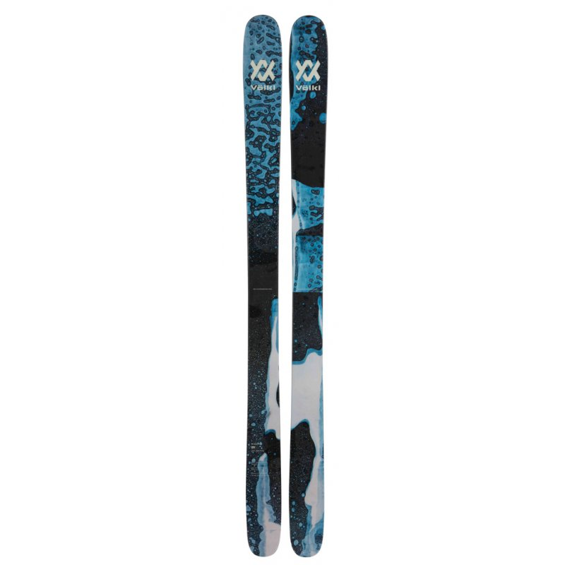

"Le ski, c'est ma tasse de thé... chaude après une journée froide sur les pistes."
 

VOLKL Revolt 104 2024
Description
Le Revolt 104 est un ski parfait pour les amoureux et les amoureuses de backcountry et freestyle, il est développé par la marque Völkl en collaboration avec les athlètes de la team Freestyle.
C'est un ski qui va s'adapter très facilement à différentes pratiques et conditions par rapport au Revolt 114 et au Revolt 121. Voici les mots de Paddy Graham pour décrire le ski : "... Qu'il s'agisse de jibbing, de kicker ou de backcountry, le Revolt 104 s'amuse dans toutes les situations et est extrêmement polyvalent. Les graphismes sont également remarquables et on ne s'ennuie jamais car on découvre de nouveaux détails à chaque fois".
Ce ski a été conçu pour vous permettre d'enchaîner les runs sur les pentes vierges en toute sérénité et prendre les plus gros kicks. Avec ses 104mm au patin, ses lignes généreuses et son double rocker prononcé, il vous assure une flottaison optimale en poudreuse. Son cambre standard promet une belle accroche sur une neige plus travaillée ou sur piste. Le noyau Multilayer Woodcore issu de différents bois, apporte légèreté, flexibilité et puissance.
De plus, la technologie 3D.Radius Sidecut permet au Revolt 104 d'être maniable et stable, que ce soit lors de petits virages comme en grandes courbes à pleine vitesse. Ainsi, malgré la largeur de son patin, les changements de carres sont optimisés pour être plus agile pour mieux vous adapter aux changements de terrains ou aller chercher vos futurs kicks naturels ou corniches. Le Revolt 104 est puissant de par sa construction Full Sidewall mais aussi promet une meilleure durabilité car il a été conçu pour subir les impacts extérieurs.
Pour les skieurs confirmés et experts ce ski est fait pour vous, il a tout pour plaire ! Enfin, vous ne pouvez qu'adorer le design unique réalisé par l'artiste chinois King Rhomberg
Caractéristiques

549,90 €
En Stock
Acheter le produit
Produits recommandés